5 Kuliner Wajib Coba di Medan
Dari warung pinggir jalan hingga restoran legendaris, ini daftar kuliner Medan yang tidak boleh dilewatkan.
Baca SelengkapnyaSelamat Datang di
Where Culture Meets Flavor — Jantung Sumatera yang Tak Terlupakan
Kota terbesar ketiga di Indonesia yang kaya budaya, sejarah, dan cita rasa.
Medan adalah ibu kota Sumatera Utara yang berdiri sejak tahun 1590. Kota ini merupakan rumah bagi lebih dari 13 etnis — Batak, Melayu, Tionghoa, Jawa, dan banyak lagi — yang hidup berdampingan menciptakan harmoni budaya yang unik.
Selain itu, Medan menjadi pintu gerbang menuju destinasi wisata terkenal seperti Danau Toba, Bukit Lawang, dan Berastagi. Dari wisata sejarah, alam, budaya, hingga kuliner khas yang menggugah selera — semuanya ada di sini.
Lihat Destinasi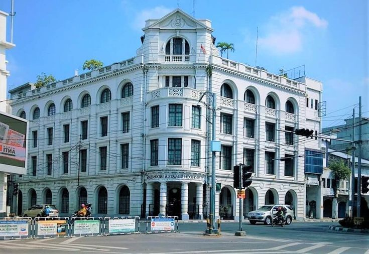
Temukan keindahan alam dan warisan budaya Medan yang menakjubkan.
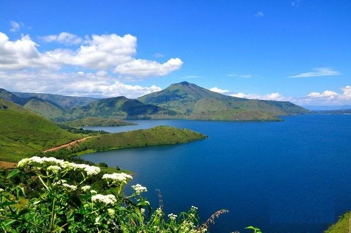
Danau vulkanik terbesar di Asia Tenggara
Alam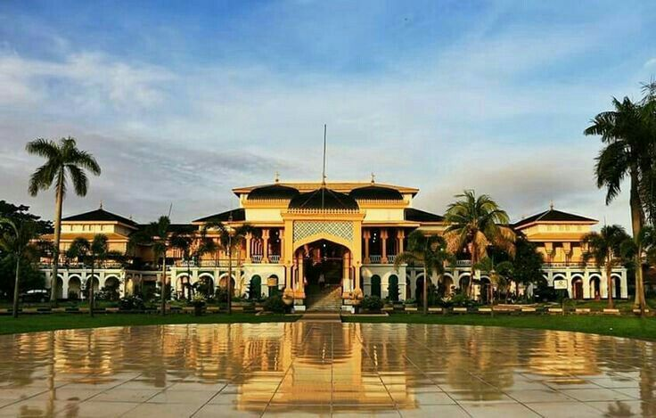
Istana megah Kesultanan Deli berusia ratusan tahun
Sejarah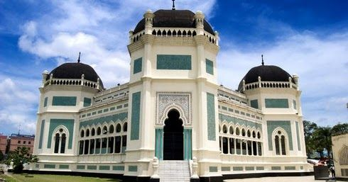
Masjid ikonik bergaya Timur Tengah di pusat kota
Religi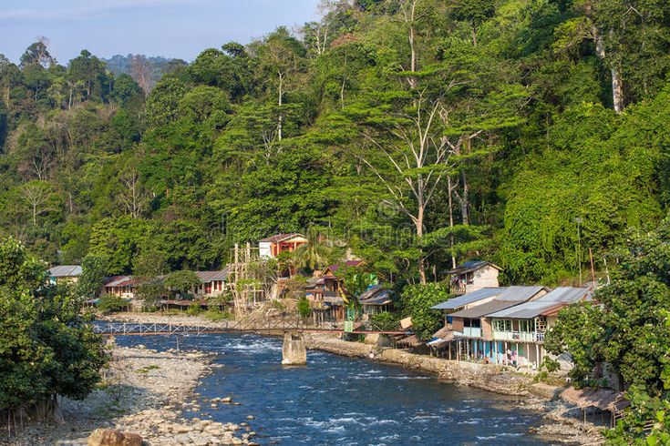
Surga ekowisata & habitat orangutan Sumatera
Alam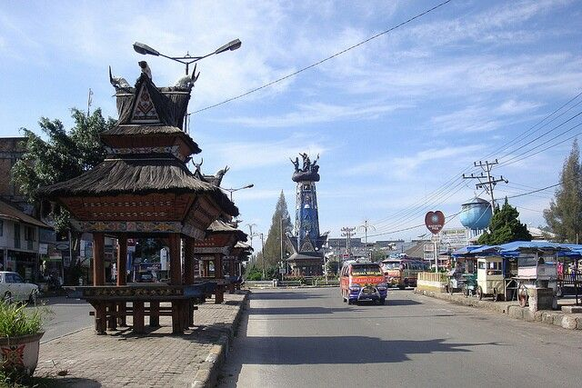
Kota pegunungan sejuk dengan pemandangan gunung berapi
AlamTiga alasan utama Medan wajib masuk bucket list kamu.
Lebih dari 13 suku & etnis hidup berdampingan — jadikan Medan salah satu kota paling beragam di Indonesia.
Dari soto Medan, bika ambon, mie gomak, hingga durian Monthong — lidah kamu pasti dimanjakan.
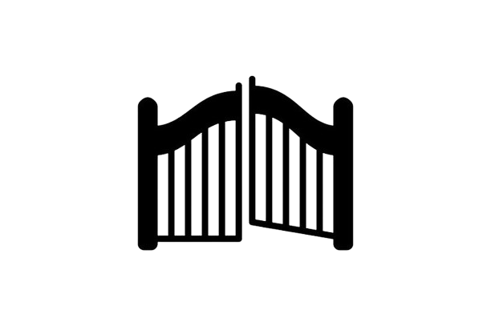
Bandara Kualanamu menghubungkan Medan ke seluruh Indonesia & mancanegara dengan mudah.
Jangan sampai kelewatan event seru di Medan!
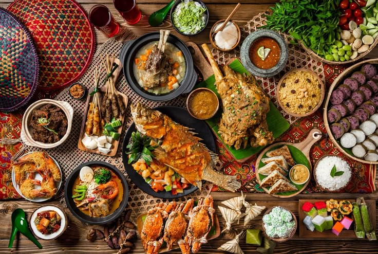
📍 Lapangan Merdeka
Nikmati kuliner khas Medan, live music, dan hiburan seru untuk seluruh keluarga.
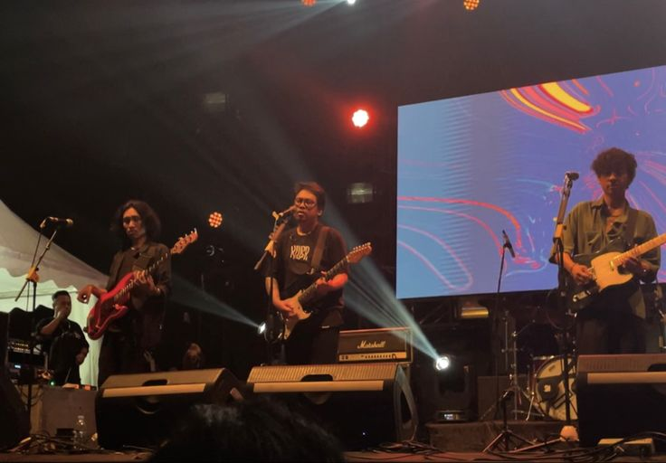
📍 Lapangan Merdeka
Band lokal dan nasional tampil live, vibe maksimal sepanjang malam.
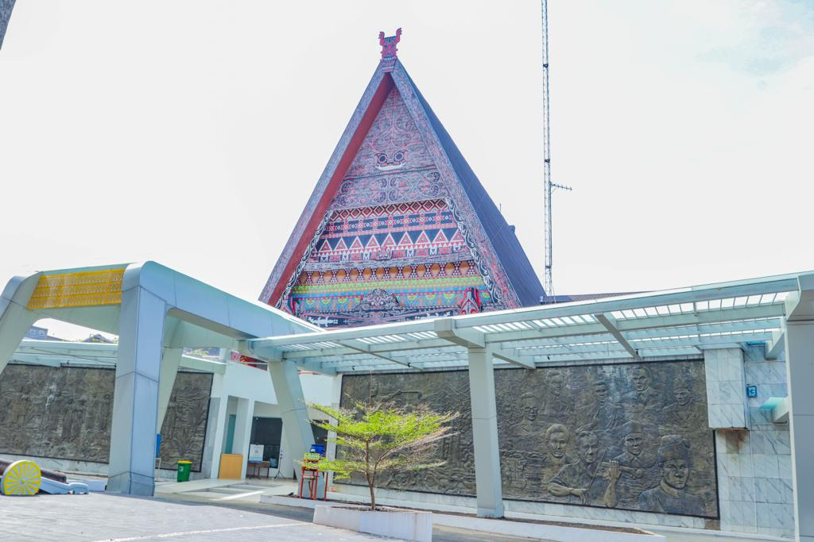
📍 Museum Negeri Sumatera Utara
Pameran seni, instalasi modern, dan workshop kreatif untuk semua usia.
"Medan bukan hanya kota — ia adalah pengalaman yang tak terlupakan."
Tiga makanan wajib coba saat kamu berkunjung ke Medan.
Kue basah khas Medan dengan tekstur kenyal dan rasa manis legit.
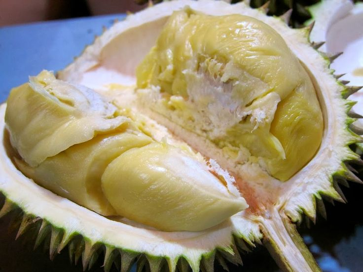
Durian Monthong & lokal dengan rasa legit yang terkenal se-Indonesia.
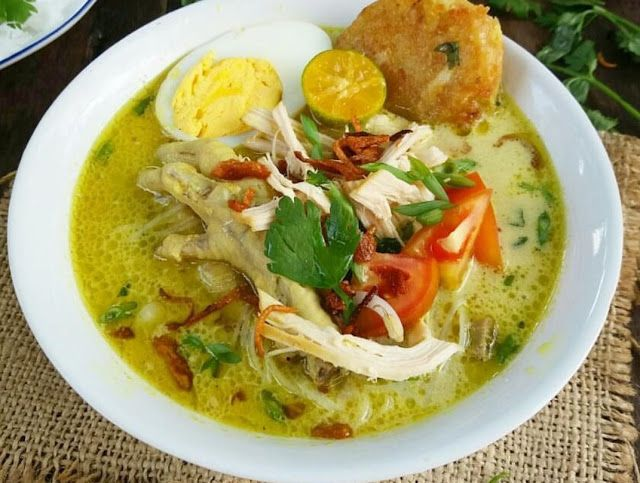
Soto berkuah santan kekuningan dengan cita rasa rempah yang kaya.
Pilihan menginap untuk semua budget — dari mewah hingga nyaman di kantong.
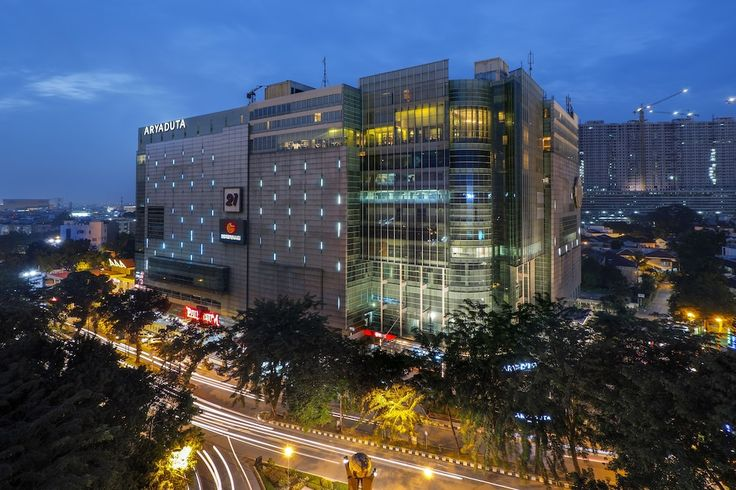
Hotel bintang 5 di pusat kota dengan fasilitas lengkap & pemandangan kota.
⭐ Luxury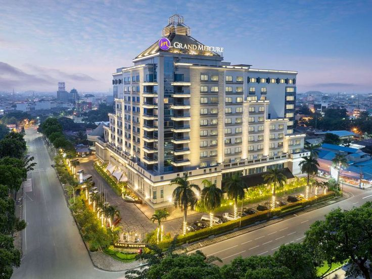
Hotel internasional dengan kolam renang rooftop dan restoran premium.
⭐ Luxury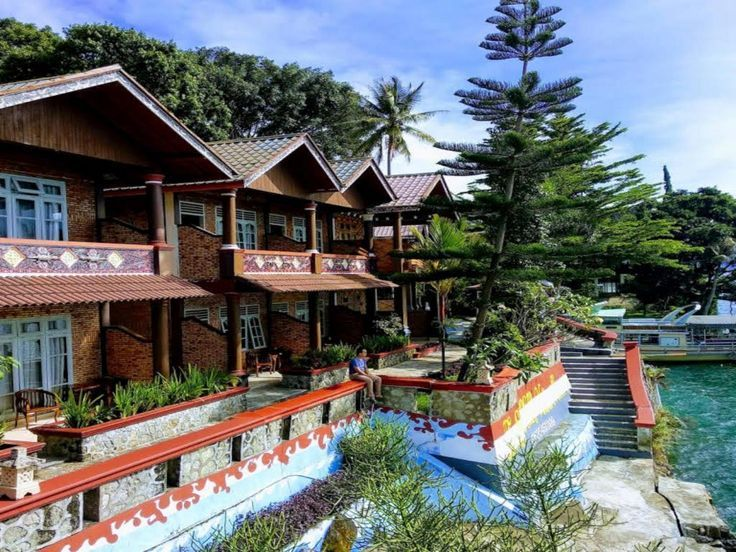
Pengalaman menginap autentik di tepi danau bersama keluarga lokal.
🌿 Eco StayPanduan perjalanan dari traveler yang sudah ke Medan.
Dari warung pinggir jalan hingga restoran legendaris, ini daftar kuliner Medan yang tidak boleh dilewatkan.
Baca SelengkapnyaRencana perjalanan lengkap dari pusat kota Medan hingga pesona Danau Toba dalam 3 hari 2 malam.
Baca Selengkapnya